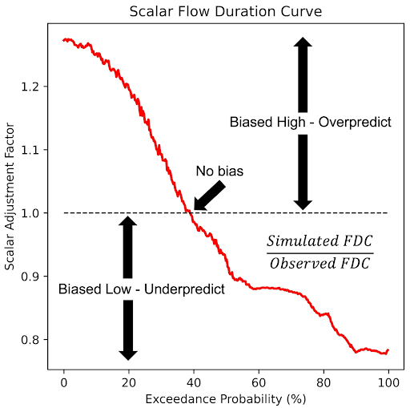

Corrección de Sesgo y SABER
RFS exhibe sesgos que pueden limitar su precisión, lo que llevó al desarrollo de un enfoque de corrección de sesgos. Para corregir estos sesgos sistemáticos en ubicaciones instrumentadas, proponemos el método de Curva de Duración de Caudal Mensual con Mapeo de Cuantiles (MFDC-QM). Este método se enfoca en los sesgos relacionados con la variabilidad del caudal y la correlación. RFS no asimila datos observados de flujo de agua en su cálculo inicial. Sin embargo, la técnica de corrección de sesgo permite que los datos globales se apliquen a nivel local. Los usuarios locales pueden tener más confianza en sus datos porque pueden saber que sus datos observados pueden ser utilizados para mejorar los datos modelados en su ubicación.
Después de aplicar la corrección de sesgo, observamos una mejora significativa en la distribución de los sesgos y las relaciones de variabilidad, con una ligera mejora en los valores de correlación a través de las estaciones, lo que resultó en simulaciones más confiables y métricas mejoradas de la Eficiencia Kling-Gupta (KGE): sesgo, variabilidad y correlación.
La siguiente presentación discute cómo RFS ha sido validado y proporciona detalles de los métodos de corrección de sesgo.
GEOGLOWS - Corrección de Sesgo.pdf
Aprendizaje Interactivo - Corrección de Sesgo
Para profundizar en el análisis de la corrección de sesgo y la evaluación del rendimiento, hemos preparado un cuaderno interactivo de Google Colab. Este cuaderno proporciona una guía paso a paso para realizar estos análisis utilizando datos reales del río Magdalena en El Banco, Colombia. Cubre tanto la corrección de sesgo como la evaluación del rendimiento, permitiéndote interactuar con los datos y métodos discutidos en esta guía: Bias_Correction_GEOGloWS_ECMWF_Hydrological_Model_Retrospective_Simulation Colab.ipynb.
SABER (Análisis de Corrientes para Estimación y Reducción de Sesgo)
El método SABER es una herramienta de corrección de sesgo diseñada para grandes modelos hidrológicos como RFS, que aborda específicamente el problema de los sesgos del modelo en cuencas de ríos tanto medidos como no medidos. SABER utiliza curvas de duración de caudal (FDC) para comparar el caudal observado con los valores simulados de los modelos hidrológicos, identificando y corrigiendo los sesgos. Para ubicaciones no medidas, donde las observaciones directas no están disponibles, SABER utiliza la curva de duración de caudal escalar (SFDC).
A diferencia de la corrección de sesgo, que cada institución realiza localmente, SABER es realizado por el equipo de RFS y no es ejecutado por los usuarios finales. Usamos los datos de las estaciones de medición disponibles para realizar una mejora en todos los resultados del modelo. Este proceso todavía está en fase de experimentación y actualmente no se aplica a los datos accesibles por los usuarios finales. Esperamos que se aplique en futuras versiones de RFS.
SABER permite que el proceso de corrección de sesgo se extienda a cuencas no medidas mediante el análisis de comportamientos de cuenca similares basados en proximidad espacial y agrupación de regímenes de flujo. Este método es particularmente útil para regiones donde la escasez de datos limita la calibración tradicional, como en modelos globales como RFS, asegurando pronósticos de caudal más precisos en grandes dominios espaciales.
SABER funciona comparando los datos simulados de caudal con los valores observados en ubicaciones de estaciones de medición para detectar sesgos altos o bajos. Aplica técnicas de aprendizaje automático para agrupar cuencas con características de flujo similares, ayudando a extender la corrección de sesgo de cuencas medidas a no medidas. El proceso de SABER incluye el cálculo de SFDC para diferentes probabilidades de superación, dividiendo los flujos simulados por los valores correspondientes de SFDC, incluso en regiones afectadas por represas o embalses.
